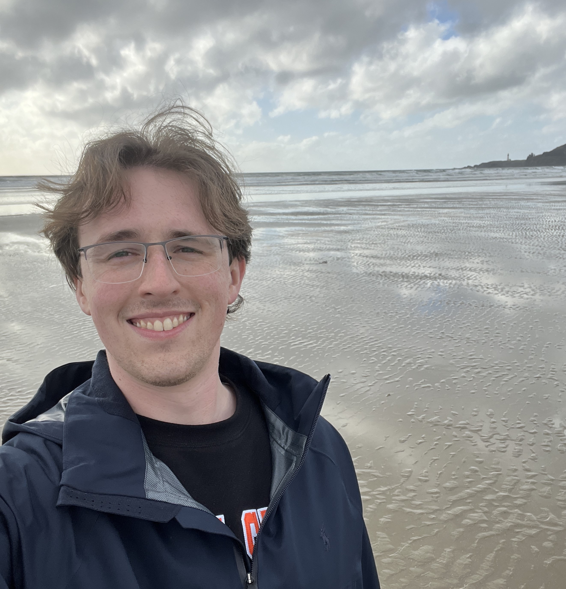
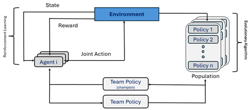
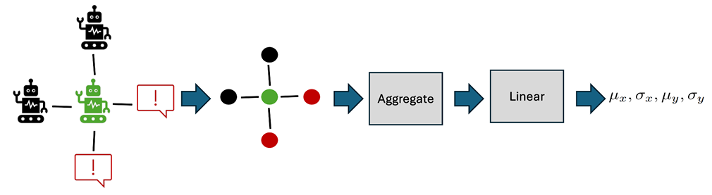
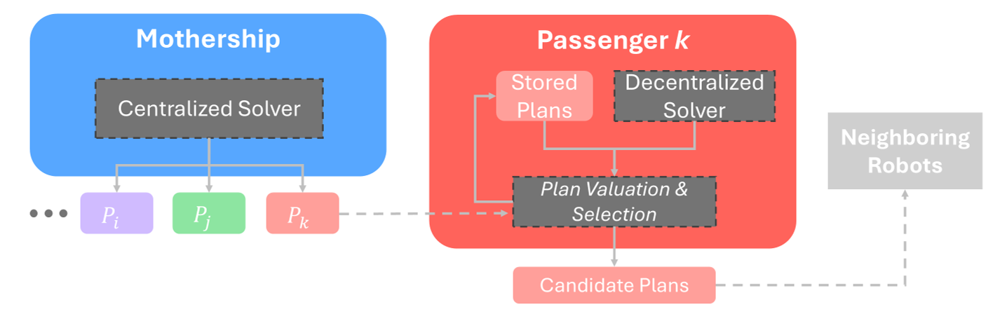

About Me
Hi! I'm Nathan Butler.
I am a motivated roboticist with a background in AI and mechanical design. I believe we are
closer than ever to achieving generalizable robotic autonomy across a wide range of real-world
environments. With experience in autonomous planning, learning-based control, and rapid
prototyping of field-deployable systems, I am building a career at the intersection of
intelligent decision making and robust hardware integration.
I have recently completed my MS in Robotics in the Robotic Decision Making Lab, part of the Collaborative Robotics and Intelligent Systems (CoRIS) Institute at Oregon State University, where I was advised by Dr. Geoff Hollinger. My research explored the coordination challenges and possibilities presented by robotic mothership-passenger systems, combining centralized and distributed multi-robot coordination approaches with planning-based and learning-based methods to develop robust hierarchical teaming algorithms for uncertain and dynamic environments.
For questions related to research or potential collaborations, please reach out at nathanbutler.nlb@gmail.com.
I have recently completed my MS in Robotics in the Robotic Decision Making Lab, part of the Collaborative Robotics and Intelligent Systems (CoRIS) Institute at Oregon State University, where I was advised by Dr. Geoff Hollinger. My research explored the coordination challenges and possibilities presented by robotic mothership-passenger systems, combining centralized and distributed multi-robot coordination approaches with planning-based and learning-based methods to develop robust hierarchical teaming algorithms for uncertain and dynamic environments.
For questions related to research or potential collaborations, please reach out at nathanbutler.nlb@gmail.com.

Featured Work

Multiagent Evolutionary Reinforcement Learning
Training coordinated multi-robot policies for sparse reward environments using a hybrid EA–RL framework.

Decentralized Multi-Robot Control with DRL
Comparing CNN and GNN policies for decentralized multi-robot motion control using MAPPO.

Hybrid Decentralization for Mothership-Passenger Systems
ICRA 2025 — hierarchical multi-robot orienteering combining centralized planning with decentralized execution.
Updates
- [04/07/2026] Our paper Multi-Robot Coordination for Underwater Mothership-Passenger Systems has been accepted for publication in Frontiers in Robotics and AI
- [01/31/2026] Submitted my first journal paper to Frontiers in Robotics and AI
- [09/10/2025] Successfully defended my MS in Robotics
- [05/19/2025] Attended & presented at ICRA 2025 in Atlanta, GA
- [01/27/2025] Our paper "Hybrid Decentralization for Multi-Robot Orienteering with Mothership-Passenger Systems" has been accepted to ICRA 2025
- [09/27/2024] Started the second year of my MS
- [09/15/2024] Submitted my first paper to ICRA 2025
- [04/26/2024] Presented poster "Pseudo-Centralized Mission Planning for Under-Ice Robotic MOTHERSHIPs" at 2024 Northwest Robotics Symposium
- [09/15/2023] Started my MS in Robotics at Oregon State University
Experience
- Sep. 2023 – Present Graduate Research Assistant — Robotic Decision Making Lab, CoRIS Institute, Oregon State University
- Jan. 2022 – Jul. 2023 Undergraduate Research Assistant — ABE Automation and Robotics Lab, Iowa State University
- Aug. 2021 – May 2023 Systems Director — Cardinal Space Mining Club, Iowa State University
- May 2021 – Dec. 2021 Mechanical Engineer Co-Op — Seed Technology and Innovation Team, Corteva Agriscience
- Jan. 2021 – May 2021 Controls Intern — Intelligent Control and Autonomy Group, NASA Glenn Research Center
- May 2020 – Aug. 2020 Undergraduate Research Assistant — Integrated Crop Management, Iowa State University Extension & Outreach
- May 2019 – Aug. 2019 Manufacturing Engineering Intern — Tenneco Inc.